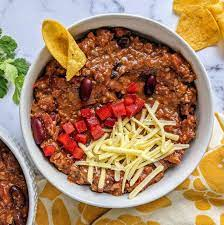

Easy Homemade Chili

Description
Homemade chili is delicious and goes great with cornbread or over corn chips for a chili pie!
This homemade chili is loaded with beff, beans and crowd-pleasing flavor.
Ingredients
- Beef
- Onion
- Canned goods
- Spices
Steps
- Cook the beef and the onion.
- Add the remaining ingredients, then bring to a boil.
- Reduce heat and let simmer for 15 minutes.